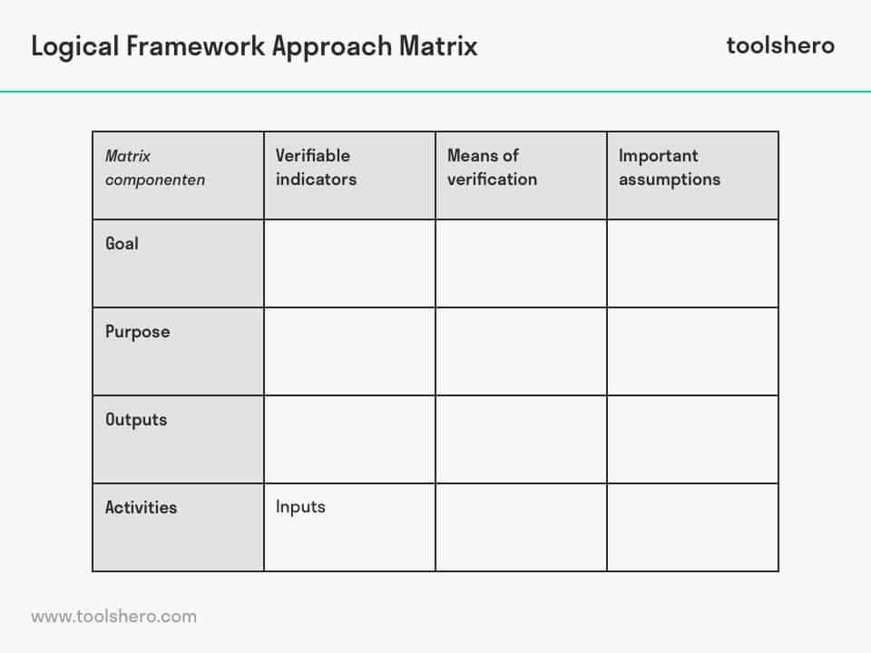

Logical Framework Approach (LFA):

The Logical Framework Approach is a widely used framework for planning, monitoring, and evaluating projects.
It helps in defining project objectives, indicators, and the logical sequence of activities.
You can find resources and templates for LFA on various development organization websites.
WWF example
Back